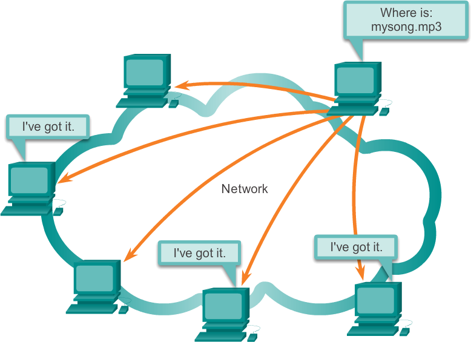

De toepassingslaag is een belangrijk onderdeel van een softwarestructuur. Het is het deel waarin de functionaliteit en toepassingen van een systeem worden ontwikkeld en uitgevoerd. Dit is het deel van de software dat zichtbaar en ook te gebruiken is door de gebruiker.
In de toepassingslaag worden verschillende softwaretoepassingen gemaakt om specifieke taken uit te voeren. Dit zijn bijvoorbeeld mobiel apps of desktopprogamma's. Ontwikkelaars gebruiken programmeertalen en frameworks om deze toepassingen te bouwen.
De toepassingslaag communiceert met andere lagen in de softwarearchitectuur, zoals de fysieklaag en de logischelaag. Het ontvangt gegevens van de gebruiker, verwerkt deze en geeft de resultaten weer.
Een belangrijk aspect van de toepassingslaag is de gebruikerservaring. Ontwikkelaars moeten ervoor zorgen dat de toepassingen intuïtief en gebruiksvriendelijk zijn, zodat gebruikers gemakkelijk kunnen navigeren en de gewenste functies kunnen uitvoeren. Als jenog meer wilt weten over dit onderwerp bekijk dan het filmpje hier onder. 